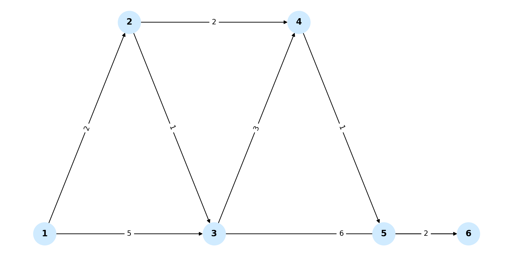

Single-Source Shortest Paths (SSSP) is the problem of finding the shortest path from one source node to all other nodes in a weighted graph.
This is useful for navigation, routing, and solving optimization problems in graphs.
In the visual example below, Dijkstra's algorithm starts from node 1 and explores the graph to find the minimum distances to all other nodes:
SSSP algorithms are used in:
Try selecting a source node and running different algorithms. Watch how paths are explored and updated:
SSSP is key for efficient pathfinding in graphs. Learning how different algorithms work and when to use each gives you powerful tools for optimization problems.